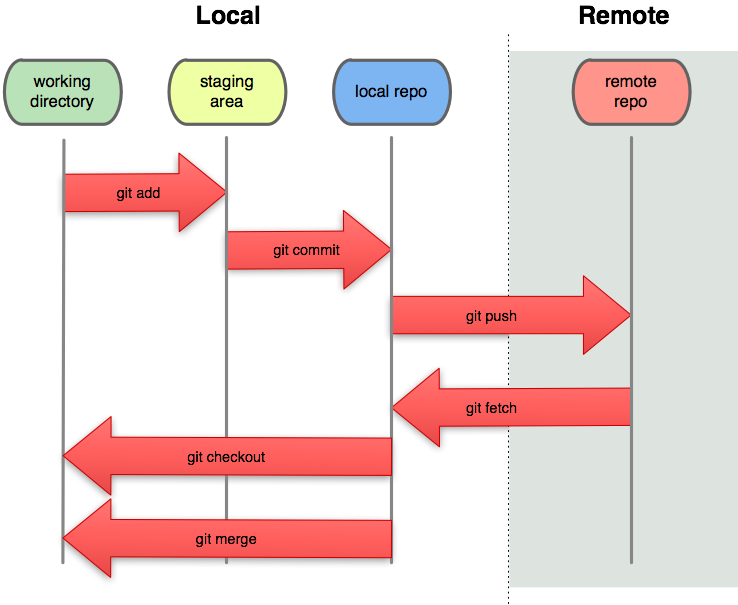

Funcionamiento de los Directorios Locales y Remotos en Git
En Git, el manejo de directorios se organiza en dos tipos: locales y remotos. Ambos juegan un papel crucial en la gestión de tu código, permitiendo trabajar de manera eficiente en proyectos tanto individuales como colaborativos.
📂Directorios Locales
Cuando trabajas con Git, cada desarrollador tiene una copia local del repositorio. Este repositorio local contiene todos los archivos del proyecto y un historial completo de todos los cambios realizados. Los directorios locales en Git incluyen:
1. Directorio de Trabajo (Working Directory)
- ¿Qué es? El directorio de trabajo es el espacio donde ves y editas los archivos del proyecto en tu máquina local.
- ¿Cómo se trabaja con él? Aquí es donde creas, editas y eliminas archivos del proyecto. Los cambios que realices en estos archivos no se guardan en el historial de Git hasta que los añades al "staging area" (área de preparación) y realizas un commit.
/proyecto
├── index.html (modificado)
├── estilos.css
└── script.js
2. Área de Preparación (Staging Area o Index)
- ¿Qué es? El área de preparación es un espacio intermedio donde Git almacena los cambios que has realizado en el directorio de trabajo antes de que sean confirmados (commit).
- ¿Cómo se trabaja con él? Para mover cambios al área de preparación, se usa el comando
git add. Aquí puedes decidir qué cambios deseas incluir en el próximo commit. Los archivos en esta área están listos para ser confirmados.
git add archivo.txt
3. Repositorio Local (Local Repository)
- ¿Qué es? El repositorio local es la base de datos de Git donde se guardan todas las versiones del proyecto. Cada vez que haces un commit, Git guarda un snapshot de los archivos en esta área.
- ¿Cómo se trabaja con él? El repositorio local almacena los cambios confirmados. Usando comandos como
git commit, los cambios en el área de preparación se guardan de manera permanente en el repositorio local.
git commit -m "Mensaje"

📂Directorios Remotos
Un repositorio remoto en Git es una versión del repositorio almacenada en un servidor centralizado (por ejemplo, en GitHub, GitLab, Bitbucket). Los directorios remotos permiten compartir el código con otros desarrolladores y sincronizar los cambios entre diferentes copias del proyecto.
1. Repositorio Remoto (Remote Repository)
- ¿Qué es? El repositorio remoto es donde se almacena una copia centralizada del proyecto, accesible a todos los desarrolladores que colaboran en el proyecto.
- ¿Cómo se trabaja con él? Los cambios realizados en el repositorio local se envían al repositorio remoto mediante el comando
git push. A su vez, para obtener los cambios realizados por otros colaboradores, se usa el comandogit pullogit fetch.
2. Enlace Remoto (Remote URL)
- ¿Qué es? Un enlace remoto es una dirección URL que se utiliza para conectar tu repositorio local con el remoto. Puede ser HTTP, HTTPS o SSH.
- ¿Cómo se trabaja con él? Para configurar el enlace remoto, se usa el comando
git remote add. Esta URL te permite enviar y recibir cambios entre tu repositorio local y el remoto. 
{kind=link}
Cómo se Trabaja con los Directorios Locales y Remotos
El flujo de trabajo básico en Git involucra tanto directorios locales como remotos:
- Modificar archivos localmente: Trabajas en el directorio de trabajo, realizando cambios en los archivos del proyecto.
- Preparar cambios para el commit: Usas
git addpara mover los archivos modificados al área de preparación.git add archivo.txt - Confirmar los cambios localmente: Ejecutas
git commitpara guardar tus cambios en el repositorio local.git commit -m "Mensaje" -
Sincronizar con el repositorio remoto: Usas
git pushpara enviar tus cambios al repositorio remoto ygit pullpara obtener los cambios de otros desarrolladores. -
Colaboración: Cada vez que otro colaborador realiza cambios, puedes integrar esos cambios en tu proyecto local con
git pullogit fetch(luego, fusionarlos congit mergesi es necesario).
Flujo básico de trabajo:
# Trabajando con el directorio local
git add . # Añade cambios al área de preparación
git commit -m "mensaje" # Guarda los cambios en el repositorio local
# Trabajando con el repositorio remoto
git push # Envía tus cambios al repositorio remoto
git pull # Trae los cambios del repositorio remoto